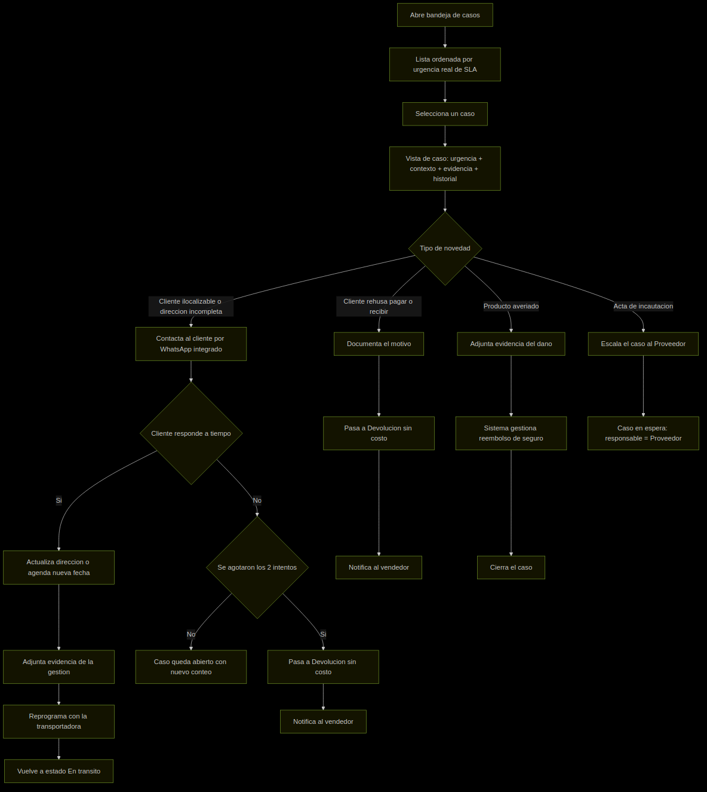
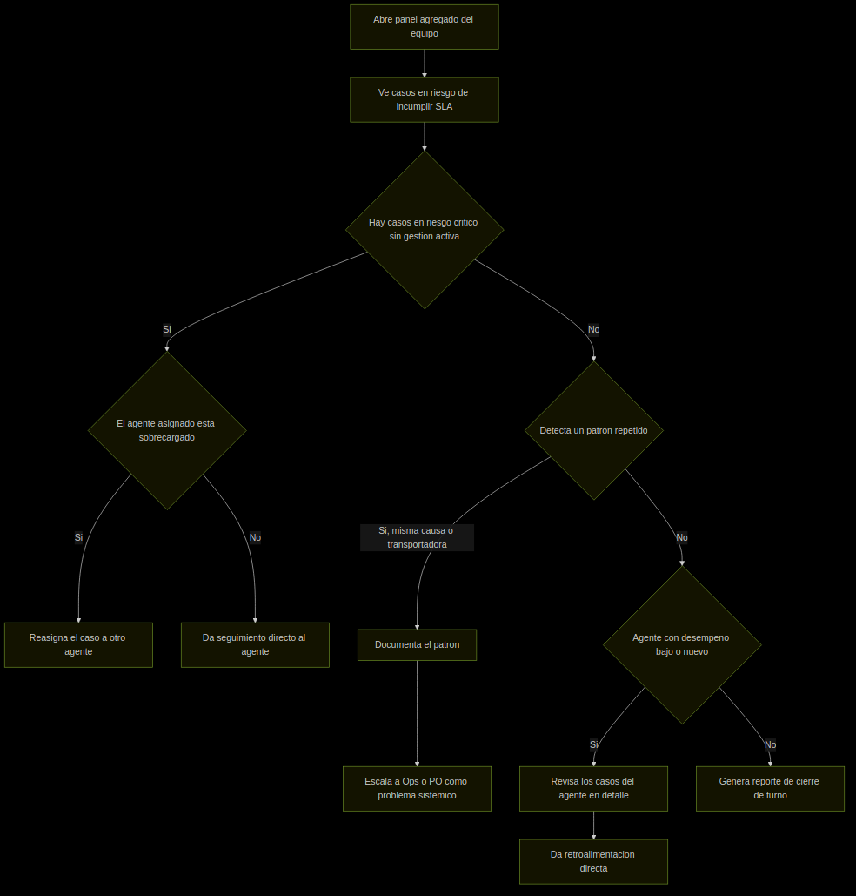

La capa variable extiende el núcleo — nunca lo duplica por país[cite: 2]
Insight clave
Dropi ya resolvió parte del problema: Chatcenter combina WhatsApp y la tarjeta del pedido en una sola vista. La oportunidad no es inventar la centralización de contexto — es extender ese patrón con una zona de urgencia (SLA) y una zona de evidencia estructurada, hoy ausentes en esa tarjeta[cite: 2].


| Urgencia / SLA | ID Pedido | Causa de Novedad | Detalle |
|---|---|---|---|
| [URGENTE] 00:42 restante | #38291 | Cliente ilocalizable | Tienda ABC . Servientrega |
| [URGENTE] 01:15 restante | #38305 | Dirección incompleta | Tienda XYZ . Coordinadora |
| [MEDIO] 04:30 restante | #38310 | Cliente rehúsa pago | Tienda ABC . Envia |
| [OK] 18:00 restante | #38312 | Producto averiado | Tienda LMN . Servientrega |